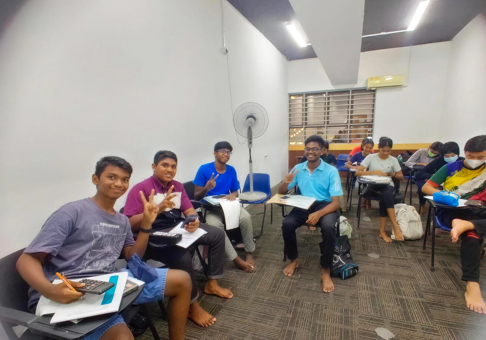
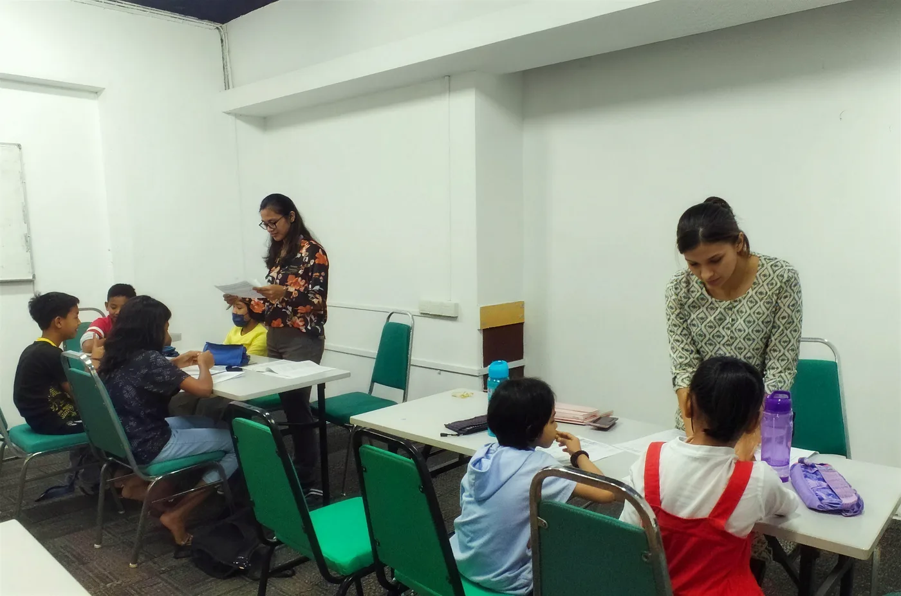
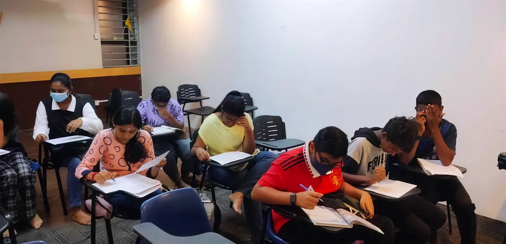
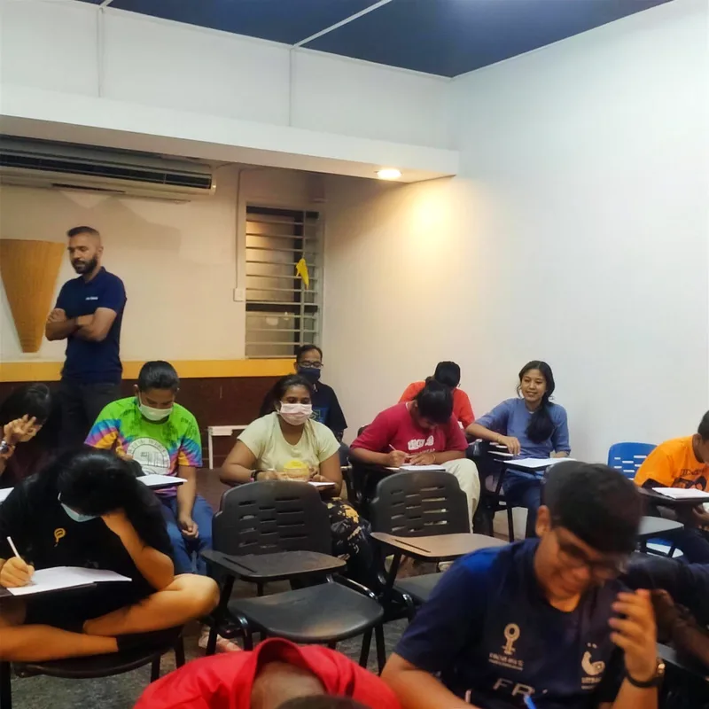
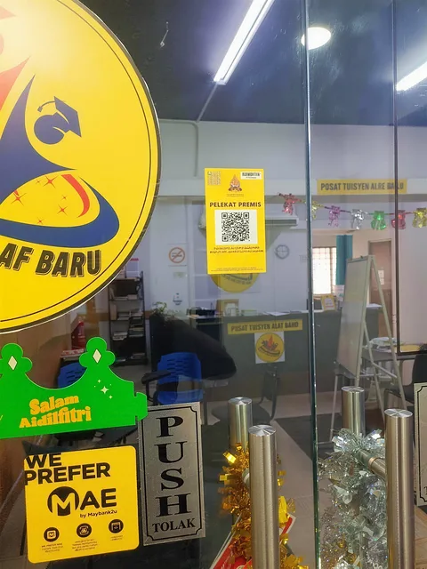

Pusat Tuisyen Alaf Baru
Kelas tuisyen dalam kumpulan kecil, dari sekolah rendah hingga STPM. Yuran mampu milik, kualiti terjamin.

No. Pendaftaran: 202203268198 (SA0588812-M)
Kelas untuk setiap tahap
Pilih tahap anak anda untuk lihat apa yang kami fokuskan.
Sekolah rendah, umur 7 hingga 12
Asas yang kukuh sejak awal
Anak belajar dengan tenang, dibimbing guru yang duduk bersama mereka. Kami bina tabiat belajar yang baik dari Darjah 1.
- Ikut silibus sekolah, topik demi topik
- Bantuan kerja rumah dan latihan tambahan
- Guru semak kerja setiap murid
Sekolah menengah, Tingkatan 1 hingga 4
Kekal di depan sepanjang tahun
Subjek makin sukar di sekolah menengah. Kami ulang kaji apa yang dipelajari di sekolah dan isi tempat yang anak masih lemah.
- Ulang kaji mingguan ikut silibus
- Persediaan untuk peperiksaan sekolah
- Asas yang kukuh sebelum tahun SPM
Tingkatan 5 dan Tingkatan 6
Bersedia untuk SPM dan STPM
Tahun peperiksaan perlukan latihan yang betul. Kami bantu pelajar faham soalan, urus masa dan jawab dengan yakin.
- Latihan kertas soalan dalam kelas
- Teknik menjawab dan urus masa
- Ulang kaji intensif menjelang peperiksaan
Kenapa ibu bapa pilih PTAB
Kumpulan kecil
Guru boleh duduk dengan setiap murid dan semak kerja mereka satu per satu.
Yuran mampu milik
Harga B40, kualiti terjamin. Tuisyen yang baik tidak patut membebankan keluarga.
Pusat berdaftar
Berdaftar dengan No. 202203268198 (SA0588812-M), dengan dua cawangan: Sri Manja, PJ dan Sentul, KL.



Cara mendaftar
Tiga langkah mudah untuk mula.
-
WhatsApp atau telefon kami
Hubungi cawangan yang paling dekat dan beritahu tahap serta subjek anak anda.
-
Dapatkan jadual dan yuran
Kami cadangkan kelas yang sesuai dan hantar jadual serta yuran.
-
Mula belajar
Datang ke cawangan pilihan anda dan anak boleh terus mula kelas.
Cawangan kami
Pilih cawangan yang paling dekat dengan rumah anda.
Di tingkat 1, berhampiran kedai-kedai Jalan PJS 3/36.
- Alamat
- Tingkat 1, 2-2, Jalan PJS 3/36,
Taman Sri Manja, 46000 Petaling Jaya, Selangor - Telefon dan WhatsApp
- 018-290 4383

Cari pintu kaca dengan logo kuning PTAB yang besar.
Di dalam pembangunan Maxim Citylights, Sentul.
- Alamat
- Maxim Citylights,
Sentul, Kuala Lumpur - Telefon dan WhatsApp
- 010-591 2447
- @ptabsentul